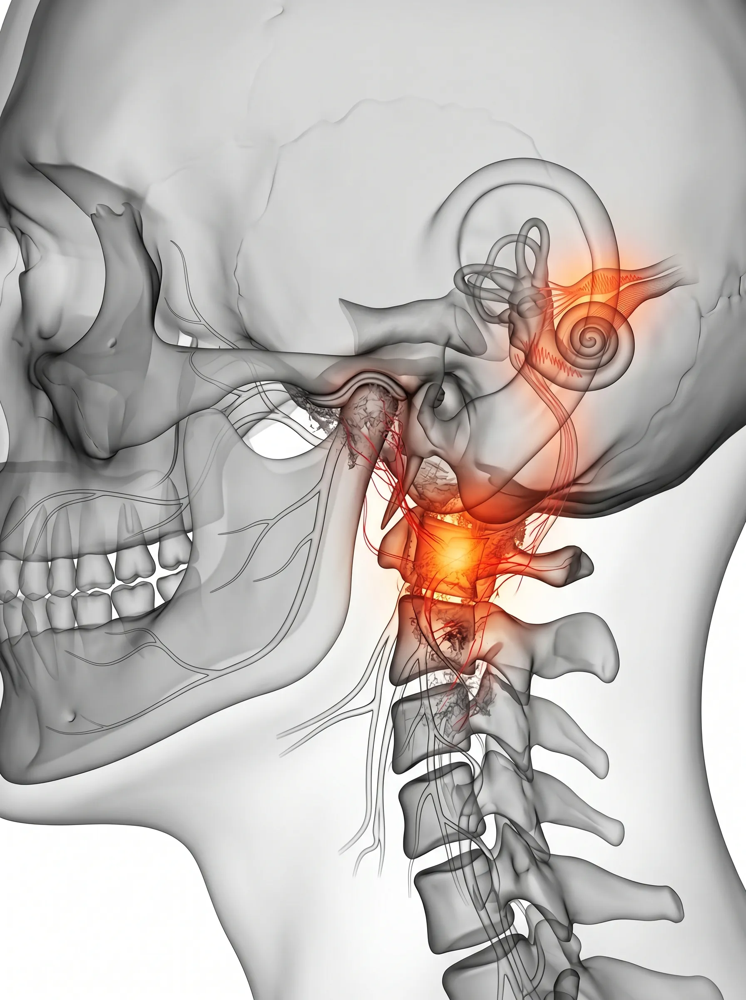

Intractable Clinic — Tinnitus
사라지지 않는 소음,
귀가 아닌 뇌와 목의 신호입니다.
이비인후과 검사로도 찾지 못한 이명의 원인, 경추와 턱관절의 불균형에 있을 수 있습니다.
숙련된 전문의의 정밀한 시선으로 예민해진 신경계를 안정시키고 잃어버린 고요를 되찾아 드립니다.
Classification
나를 괴롭히는
소리의 형태
이명은 단순한 소음이 아닌, 신경계가 보내는 비정상적인 공명 신호입니다. 원인에 따른 정확한 분류가 치료의 시작입니다.
체성(Somatosensory) 이명
목이나 턱을 움직일 때 소리의 크기가 변하거나, 특정 자세에서 이명이 심해지는 경우입니다. 물리적 구조의 불균형이 주원인입니다.
신경과민(Neural) 이명
과도한 스트레스나 만성 피로로 인해 청각 신경이 과하게 예민해져 작은 소리도 크게 증폭되어 들리는 상태입니다.
심인성(Psychosomatic) 이명
통증과 불안이 겹쳐 소리에 더욱 집중하게 되고, 이로 인해 다시 소리가 커지는 악순환의 단계입니다.

Ear-Neck Pathway
Clinical Insight — Tinnitus Root
귀가 아닌,
신체 구조가 보내는 신호입니다.
이비인후과 검사에서 이상이 없는데도 들리는 소리는 대개 신경계의 혼선에서 비롯됩니다. 목과 턱의 근육 유착이나 상부 경추의 부정렬이 청각 신경 경로를 자극하여 뇌가 존재하지 않는 소리를 인식하게 만듭니다.
신체 구조적 원인
이비인후과적 이상 소견이 없음에도 들리는 이명은 대개 목이나 턱의 근육 유착 및 신경 경로의 압박으로 인해 발생하는 신체적 신호입니다.
신경계 안정화
상부 경추를 통과하는 청각 관련 신경 경로의 압박을 해소하고 예민해진 신경계를 안정시키는 것이 가짜 소음을 멈추는 핵심입니다.
Neural Overload Timeline
이명의 악순환은
조용히 고착됩니다
일상의 평온을 되찾기 위해 지금 상태를 확인하세요.
Signal Stage
감지기
조용할 때만 들리는 미세한 '삐-' 소리. 일상에 지장은 없으나 신경계가 예민해지기 시작하는 시기입니다.
Sensitive Stage
민감기
밤잠을 설칠 정도로 소리가 뚜렷해지며, 이로 인해 집중력이 저하되고 만성 피로가 동반되기 시작합니다.
Chronic Stage ⛔
고착기
이명이 24시간 지속되며 두통, 어지럼증, 우울감 등 전신적인 신경계 불균형 증상으로 확산된 단계입니다.
Targeted Solution
삼성365의원 이명 특화 3R Therapy
예민해진 신경계를 안정시키고, 잃어버린 고요를 되찾아 드립니다.

01
Release 이완
청각 신경을 자극하는 상부 경추 주변의 과긴장된 심부 근육과 미세 유착 부위를 정밀하게 이완합니다.

02
Reinforcement 강화
턱관절과 경추의 지지 구조를 보강하여, 신경이 다시 압박받지 않는 안정적인 신체 밸런스를 구축합니다.

03
Recovery 정상화
과민해진 청각 신경계의 신호를 안정시키고 전체적인 신경 흐름을 정상화하여 평온한 일상을 회복시킵니다.

"이명은 '들리는 것'이 아니라 '느껴지는 것'입니다. 정밀한 진찰로 소음의 뿌리를 찾아 평온한 일상을 되찾아 드립니다."
삼성365의원 대표원장
자주 묻는 질문
이비인후과 검사에서 정상이라는데 치료가 가능한가요? ↓
네, 많은 이명이 귀 자체의 구조적 문제가 아닌 목과 턱의 신경적 기능 문제입니다. 세밀한 진찰로 그 기능적 연결고리를 찾아내면 충분히 호전될 수 있습니다.
치료 기간은 얼마나 걸리나요? ↓
개인의 신경 민감도에 따라 다르지만, 신경계가 안정을 찾는 데는 일정 기간의 집중 치료가 필요합니다. 대개 초기 치료부터 소리의 크기나 빈도가 줄어드는 변화를 느끼실 수 있습니다.